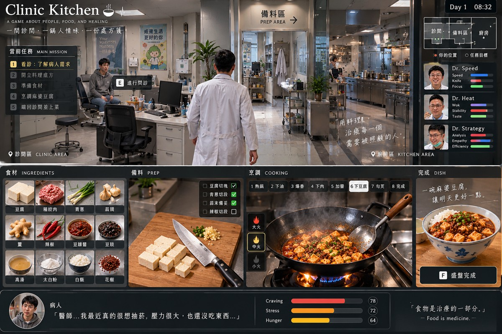
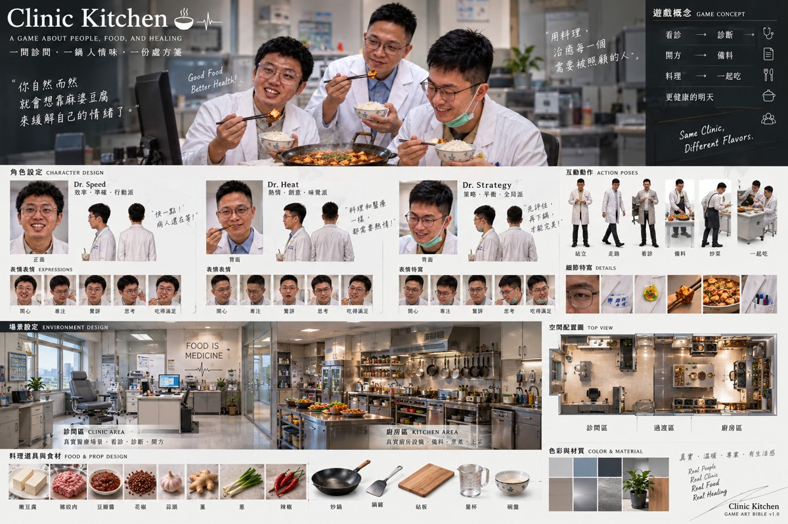
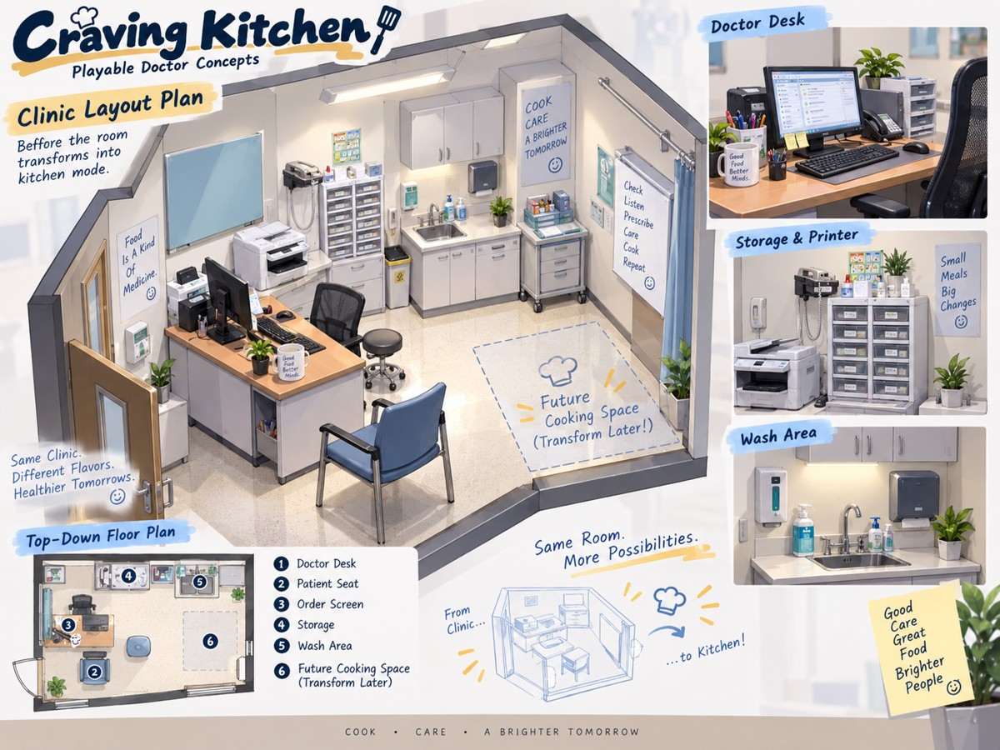
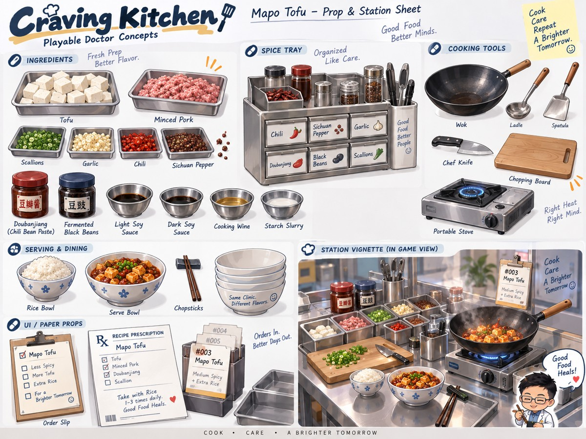
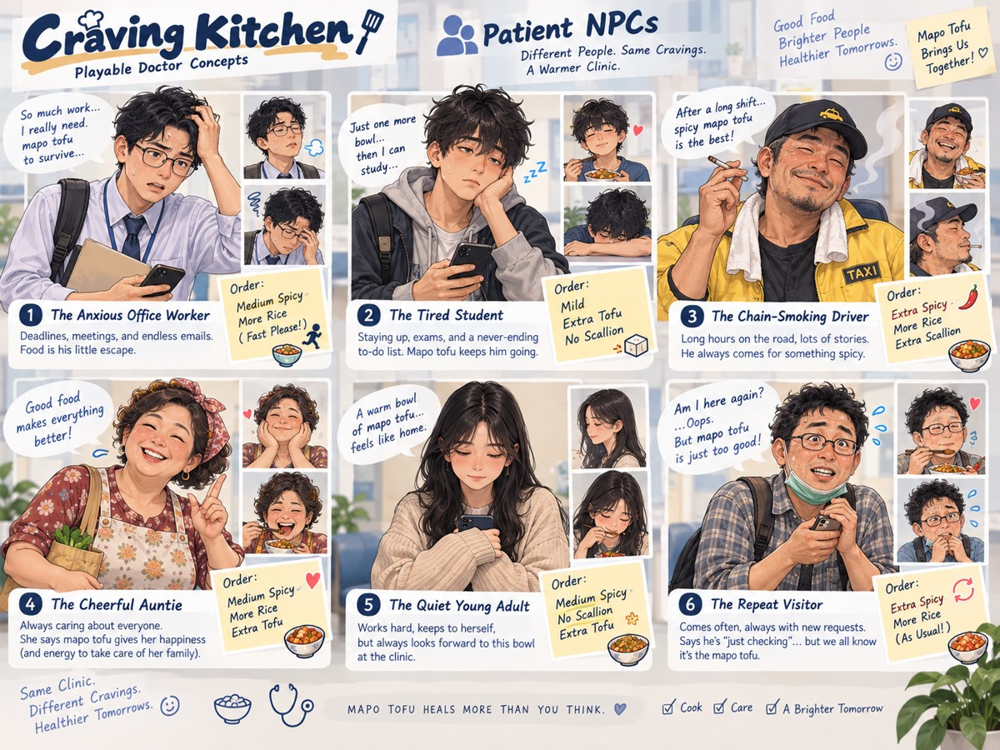

CLINIC KITCHEN / VERIFIED SOURCE MATERIAL美術原稿，不是假裝完成的 3D 成品
以下七張圖為本次封包保存的完整美術參考。最新的寫實人物、前診間／中備料／後廚房，以及上方移動、下方料理的規格優先。舊圖內 Q 版小人物、魔法變身診間與醫療功效標語，不作為正式遊戲的規格。
每張原稿保留原始 PNG；縮圖只是瀏覽用。未生成 GLB、FBX、骨架、貼圖通道或人物動作模型。開啟目前 2D 功能原型。

最新上下分區介面參考 · 點圖查看完整原稿
寫實人物與前診間／後廚房美術參考 · 點圖查看完整原稿三位醫師角色設定 · 點圖查看完整原稿
診間空間與設備 · 點圖查看完整原稿料理氛圍參考 · 點圖查看完整原稿
材料、餐具與工作站 · 點圖查看完整原稿
六位病人設計參考 · 點圖查看完整原稿